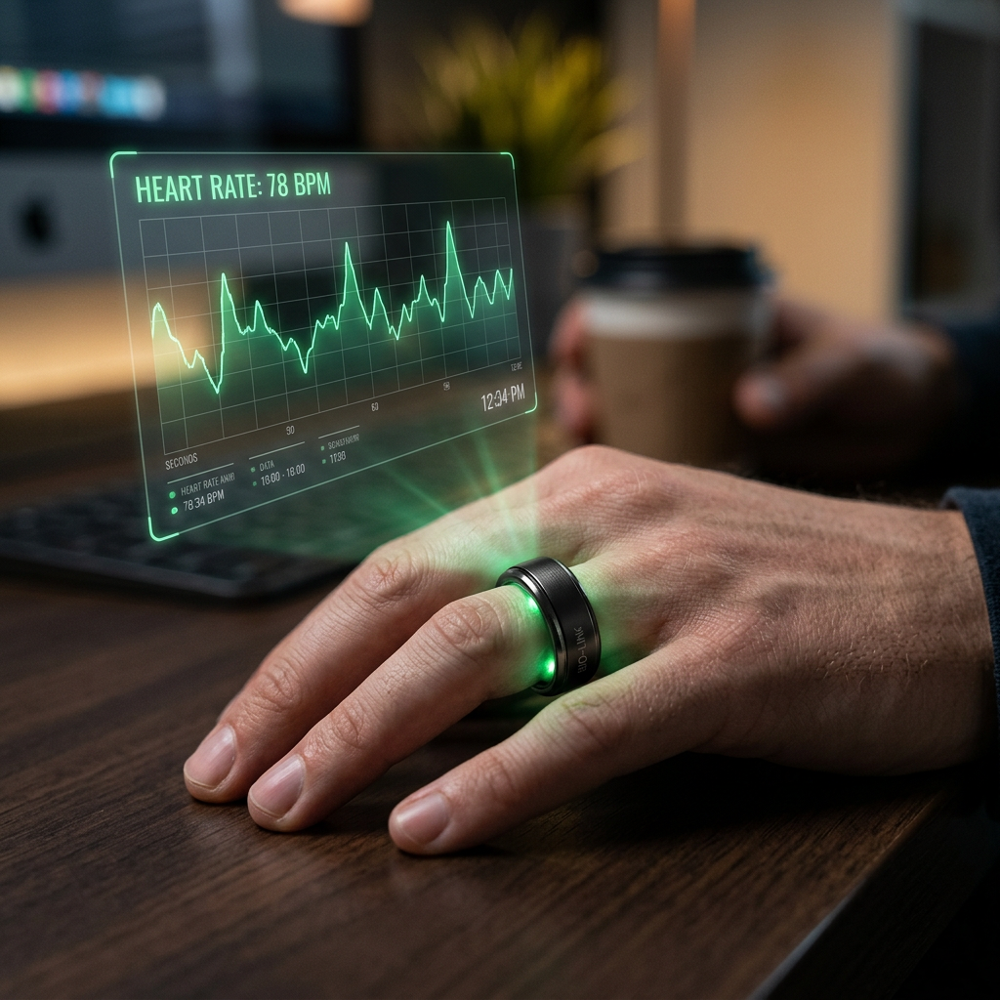

RingConn Gen 2 vs Gen 2 Air: The Ultimate Comparison for High-Performance Wearables
The Weightless Revolution: Why Your Next Wearable Should Be a Ring
For years, health enthusiasts were forced to choose between bulky smartwatches that scream 'tech' or inaccurate fitness trackers that die after a single day. The friction of wearing a heavy device to bed often ruins the very sleep data you're trying to collect. Enter the next generation of RingConn technology.
If you are currently deciding between the RingConn Gen 2 and the RingConn Gen 2 Air, you aren't just looking for a piece of jewelry. You are looking for a precision instrument that disappears on your finger while providing medical-grade insights into your recovery, heart health, and sleep cycles. Both models represent the pinnacle of minimalist engineering, but subtle differences in weight, battery density, and sensor arrays will determine which one deserves a permanent spot on your hand.
| Feature | RingConn Gen 2 | RingConn Gen 2 Air | The Verdict |
|---|---|---|---|
| Weight | ~2.0g - 3.0g | ~2.0g (Ultra-Light) | Air is slightly lighter |
| Battery Life | Up to 10-12 Days | Up to 10 Days | Gen 2 for longevity |
| Thickness | 2.0mm | 2.0mm | Tie |
| Health Sensors | Advanced PPG, Skin Temp, Accelerometer | Optimized PPG, Skin Temp | Gen 2 for deeper data |
| Water Resistance | IP68 / 100m | IP68 / 100m | Tie |
| Best For | Data-driven performance | Maximum comfort seekers | Shop Gen 2 |
RingConn Gen 2: The Powerhouse of Longevity
The RingConn Gen 2 isn't just an incremental update; it is a masterclass in power management. While most smart rings struggle to make it past the 5-day mark, the Gen 2 pushes the boundaries of physics by offering up to 12 days of continuous tracking on a single charge. This is a game-changer for travelers and high-performance individuals who don't want another charging cable cluttering their life.
Unmatched Health Intelligence
The Gen 2 features an enhanced sensor suite specifically tuned for high-fidelity heart rate variability (HRV) and blood oxygen monitoring. It excels in identifying early signs of fatigue and stress, allowing you to adjust your training or workload before burnout hits. If you prioritize a 'set it and forget it' lifestyle with the longest battery life in the industry, the Gen 2 is the undisputed champion.

RingConn Gen 2 Air: The 'Barely There' Experience
For the purists who find even the thinnest rings intrusive, the RingConn Gen 2 Air was designed with a single philosophy: invisibility. By shaving off every possible milligram of weight, the Air model achieves a sensation that users describe as 'wearing nothing at all.' This is particularly critical for sleep tracking, where the slightest discomfort can lead to a subconscious shift in position that disrupts your REM cycle.
Designed for 24/7 Comfort
The Gen 2 Air utilizes a refined aerospace-grade titanium shell that is both hypoallergenic and incredibly durable. Despite its featherweight profile, it doesn't sacrifice the core metrics you need. You still get comprehensive sleep staging, activity tracking, and stress monitoring. It is the perfect choice for the minimalist who wants the benefits of a smart wearable without the physical footprint of traditional tech.
Which One Should You Choose?
Choosing between these two comes down to your personal hierarchy of needs. Both rings offer a subscription-free experience, meaning once you own the hardware, you own your data forever—a refreshing change in a market dominated by monthly fees.
- Choose the RingConn Gen 2 if: You are a power user. You want the absolute maximum battery life (up to 12 days) and the most robust sensor performance for deep health analytics.
- Choose the RingConn Gen 2 Air if: You are sensitive to wearing jewelry. You want the lightest possible device that still delivers premium health insights without ever feeling 'heavy' on your hand.
Final Verdict: The Future of Your Health is Circular
Regardless of your choice, moving from a wrist-based wearable to a RingConn device is a significant upgrade in both style and data accuracy. The finger is a superior location for pulse oximetry and heart rate monitoring compared to the wrist, where bone and movement often interfere with sensor readings.
Stop letting bulky tech dictate your comfort. Secure the latest in biometric engineering today and start tracking your health with the precision you deserve.
Ready to transform your recovery?